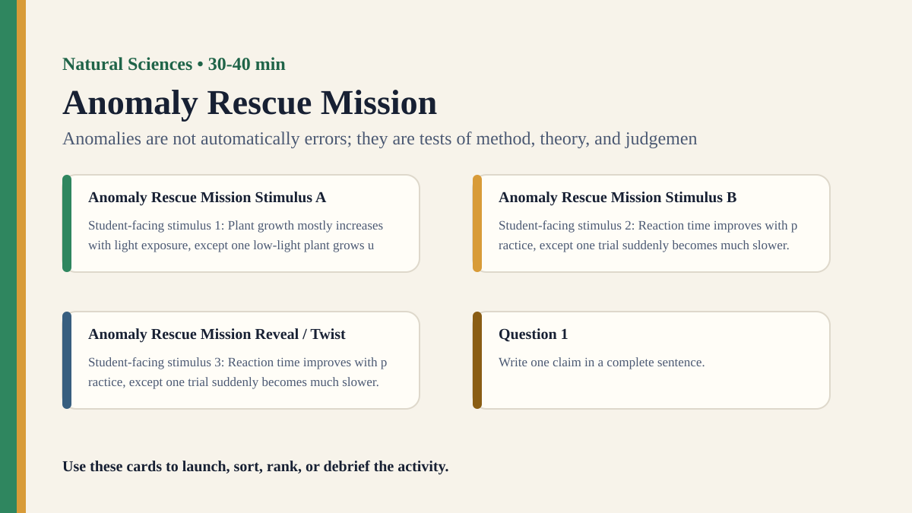

Detailed activity
Anomaly Rescue Mission
Students receive a dataset with one anomalous result and decide whether to reject, explain, repeat, or revise the model.
Free classroom activity
Big Idea
Anomalies are not automatically errors; they are tests of method, theory, and judgement.
Teacher Summary
Students practice reasoning about anomalous evidence in scientific inquiry.
Use one surprising data point to explore the relationship between theory and evidence.
Materials
- Small fictional dataset with one outlier or anomalous result.
- Decision cards: measurement error, uncontrolled variable, new phenomenon, repeat trial, revise model.
Ready to run
Classroom Resource Pack
Use the printable pack for concrete stimulus cards, a student recording sheet, teacher prompts, and a visual prompt image.
Visual Prompt

Student Prompt
Inspect the Anomaly Rescue Mission stimulus. Record one first claim, the evidence you used, your confidence, and what would make you revise.
Actual Lesson Questions
| # | Question for students | Teacher cue |
|---|---|---|
| 1 | Write one claim in a complete sentence. | Teacher cue: look for a clear claim, not just a description. |
| 2 | List two pieces of evidence. | Teacher cue: students should name visible words, data, source features, method features, or contextual clues. |
| 3 | Separate observation from interpretation. | Teacher cue: this is where assumptions, framing, models, or perspective usually appear. |
| 4 | Circle one confidence level and justify it. | Teacher cue: confidence is data for the debrief, not a grade. |
| 5 | Name one piece of missing information. | Teacher cue: push for method, source, context, comparison, or definitions. |
| 6 | Answer using the activity as evidence. | Teacher cue: students should move from the classroom example to a general TOK issue. |
Concrete Stimulus Packet
Stimulus
Mini Investigation Data
Plant A grew 2 cm with water only. Plant B grew 5 cm with fertiliser. Plant C grew 1 cm but was kept by a colder window. Student claim: “Fertiliser causes faster growth.”
Use this to discuss variables, controls, anomalies, and limits.Stimulus
Anomaly Rescue Mission Example
Plant growth mostly increases with light exposure, except one low-light plant grows unusually tall.
Use this as the activity-specific version of the stimulus.Stimulus
Comparison / Twist Card
Reaction time improves with practice, except one trial suddenly becomes much slower.
Reveal after students commit to their first judgement.Teacher Key / Reveal
The key move is not the “right answer”; it is the moment students see how anomalies are not automatically errors; they are tests of method, theory, and judgement.
Setup Notes
- Use a dataset simple enough for students to understand quickly but ambiguous enough to support different responses.
- Make the anomaly plausible as either error or discovery.
Ready-to-Use Examples
- Plant growth mostly increases with light exposure, except one low-light plant grows unusually tall.
- Reaction time improves with practice, except one trial suddenly becomes much slower.
Run Resources
- Anomaly decision board: discard, repeat, investigate, revise model.
- Evidence-needed cards: check instrument, repeat measurement, inspect conditions, compare theory.
Procedure
- Give groups a simple model and a dataset that mostly fits it.
- Students identify the anomalous result and list possible explanations.
- Groups choose a response: discard, repeat, investigate, or revise the model.
- Groups defend what evidence would justify their response.
- Debrief how scientists should treat results that do not fit expectation.
Teacher Language
- An anomaly is a question mark, not automatically a mistake or a breakthrough.
- What evidence would justify your next move?
TOK Debrief Questions
- Knowledge question: When should anomalous evidence change a theory?
- How can expectations help and hinder scientific judgement?
- What is the difference between ignoring an anomaly and responsibly investigating it?
Knowledge Questions
- When should anomalous evidence change a theory?
- How do expectations shape interpretation of data?
- What makes an outlier scientifically important?
Sample Student Output
- We repeated the measurement before revising the model because one point was not enough.
- The anomaly mattered because it appeared under a condition the model had ignored.
Exhibition Object Idea
A dataset graph with one anomalous point and competing explanation labels.
Adaptations
- Support: give three possible explanations to choose from.
- Challenge: include two anomalies with different likely causes.
Extension Tasks
- Students write a cautious lab-note response to an unexpected result.
- Compare famous scientific anomalies with everyday data cleaning.
Teacher Notes
Avoid implying that every anomaly is revolutionary; most need careful checking first.
The TOK value lies in the criteria students use to decide what to do next.